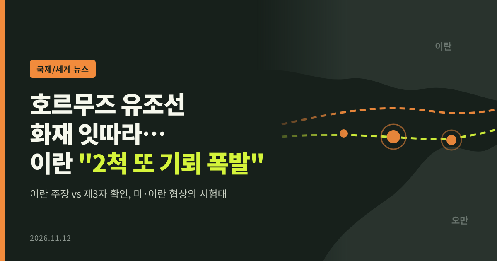
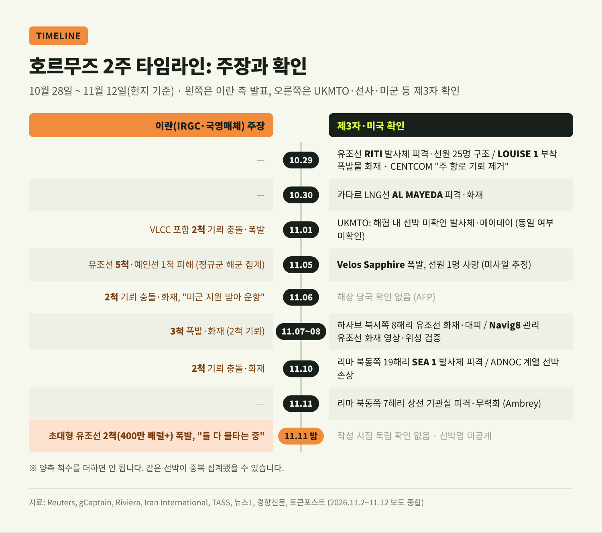
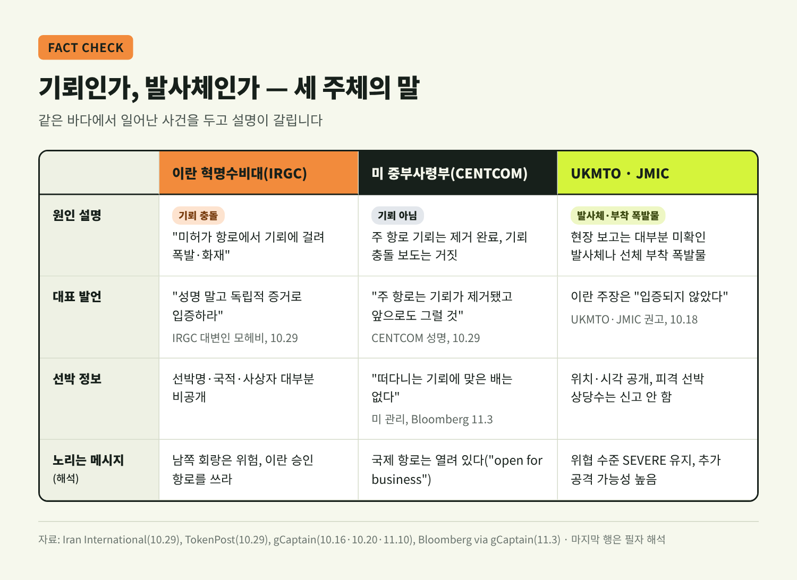
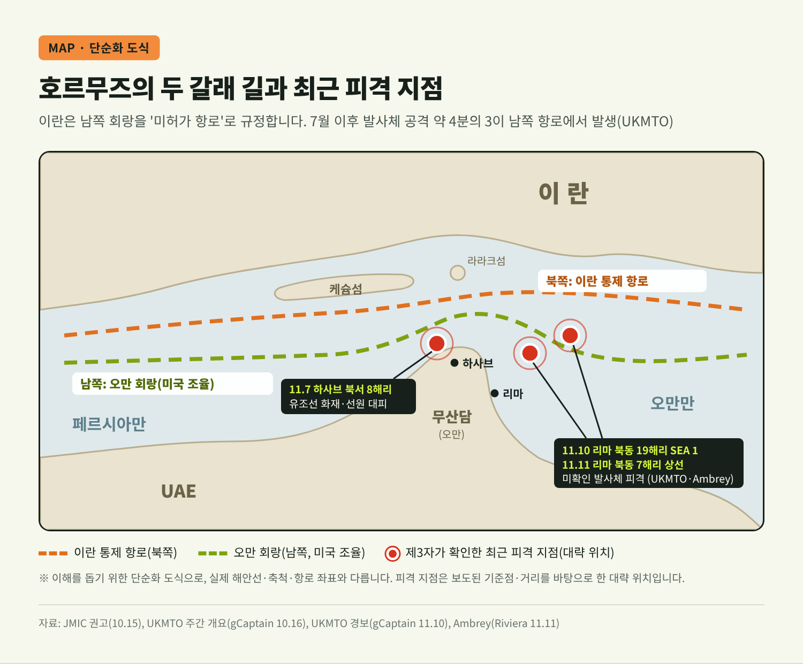
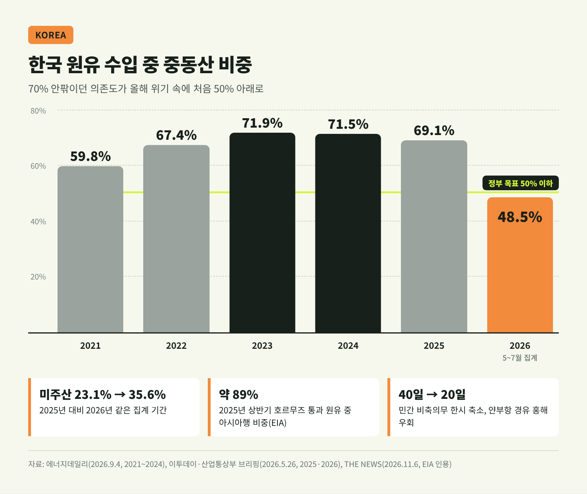
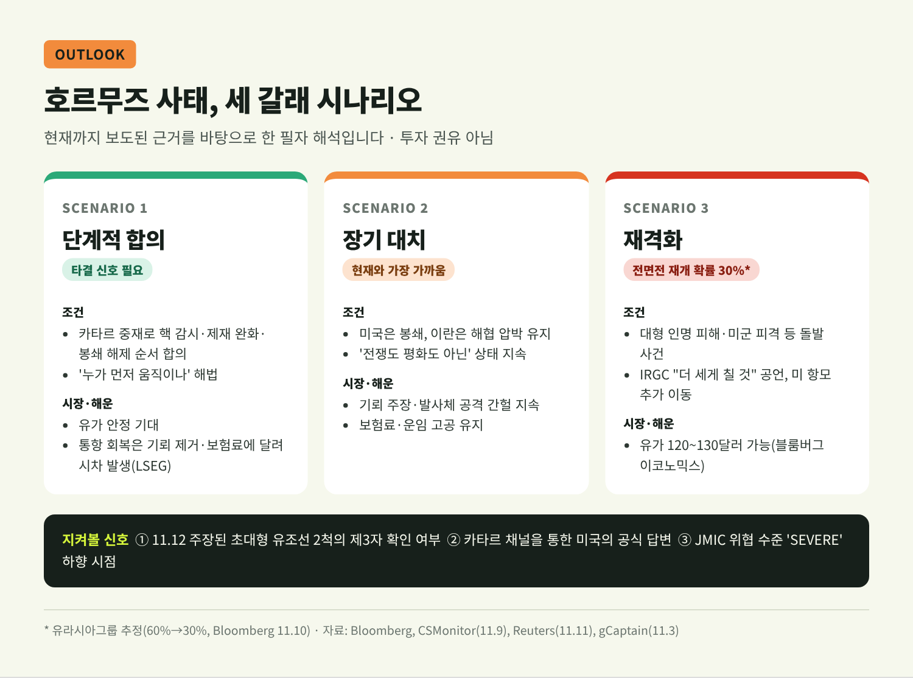

호르무즈 유조선 화재 잇따라…이란 "2척 또 기뢰 폭발" 주장

이번 글에서는 최근 2주 사이 호르무즈 해협에서 잇따른 유조선 화재와 이란 혁명수비대(IRGC)의 '기뢰 충돌' 주장을 정리합니다. 누가 무엇을 주장했고 무엇이 확인됐는지, 그리고 미·이란 협상과 우리 에너지 수급에 어떤 의미가 있는지 차례로 살펴보겠습니다.
3줄 요약
- 11월 12일(현지) IRGC는 "전날 밤 남쪽 '미허가 항로'를 지나던 초대형 유조선 2척(원유 400만 배럴 이상)이 폭발해 불타고 있다"고 발표했습니다. 독립 확인은 아직 없습니다.
- 11월 들어 IRGC의 기뢰 주장은 1·5·6·8·10·11일로 이어졌지만, 영국 해사무역기구(UKMTO)가 확인한 사건은 대부분 '미확인 발사체'나 '부착 폭발물'이었습니다. 미군은 주 항로 기뢰가 이미 제거됐다는 입장입니다.
- 중간선거 뒤 미국은 추가 공습을 미루고 카타르 중재에 기대고 있지만, 공식 휴전은 없습니다. 해협 사건 하나하나가 협상의 판을 흔들고 있습니다.
■ 무슨 일이 있었나 — 2주간의 시간순 정리
가장 최근 사건부터 짚겠습니다.
11월 12일 IRGC 해군은 "11일 밤 초대형 유조선 2척이 대형 폭발로 멈춰 섰다"고 밝혔습니다. 해협 교통통제센터의 반복 경고를 무시하고 남쪽 항로로 들어섰다는 설명입니다. 이란 국영매체는 "기뢰에 충돌해 폭발했다"며 영상을 내보냈습니다. 선박 이름과 국적, 사상자는 공개되지 않았습니다. (Reuters·TASS·Trend, 11/12)
이 발표는 단발이 아닙니다. 11월 1일에는 초대형 유조선(VLCC)을 포함한 2척, 5일에는 정규군 해군 집계로 "유조선 5척과 예인선 1척", 6일과 8일에는 각각 2척과 3척, 10일에는 다시 2척이 기뢰에 걸렸다는 주장이 나왔습니다. 문구도 비슷합니다. "미허가 항로", "항법장치를 끄고 미군의 지원을 받았다"는 표현이 반복됩니다.

제3자가 확인한 사건도 적지 않습니다.
- 10월 29일 파나마 선적 유조선 RITI가 하사브(오만) 인근에서 발사체에 맞아 추진력을 잃었고, 오만 해군이 선원 25명을 구조했습니다. 같은 날 LOUISE 1에는 소형 보트가 폭발물 2개를 붙여 기관실에 불이 났습니다. (gCaptain)
- 10월 30일 카타르 나킬라트의 LNG선 AL MAYEDA가 피격돼 불이 났고, 카타르 외교부가 규탄 성명을 냈습니다.
- 11월 5일 바레인으로 향하던 제품운반선 Velos Sapphire에서 폭발이 일어나 선원 1명이 숨졌습니다. 미사일로 추정되지만 확정되지는 않았습니다. (Reuters)
- 11월 7~8일 UKMTO는 하사브 북서쪽 8해리에서 유조선 화재와 선원 대피를 보고했습니다. Reuters는 영상과 위성사진으로 Navig8 관리 유조선이 오만 앞바다에서 불타는 모습을 검증했습니다. 이 배는 IRGC가 "그날 피격된 3척 중 하나"라고 지목한 선박입니다.
- 11월 10일 오만 리마 북동쪽 19해리에서 유조선 SEA 1이 미확인 발사체에 맞았고, 같은 날 UAE 영해에서 ADNOC 계열 선박의 손상이 확인됐습니다.
- 11월 11일 리마 북동쪽 7해리에서 상선 한 척의 기관실이 발사체에 맞아 멈춰 섰습니다. (Ambrey, Riviera 인용)
한 가지 주의할 점이 있습니다. 이란이 말한 척수와 UKMTO 신고 건수를 더해 "몇 척이 당했다"고 계산하는 것은 위험합니다. 같은 배를 양쪽이 다르게 부르고 있을 가능성이 크기 때문입니다. 실제로 국내 일부 매체도 두 집계를 합산하지 말라고 명시했습니다.
■ 기뢰인가, 발사체인가 — 주장과 확인 사이
이번 사태의 핵심 쟁점은 '기뢰'라는 단어입니다.
이란 측은 거의 모든 사건을 기뢰 충돌로 설명합니다. 반면 미 중부사령부(CENTCOM)는 10월 29일 "국제적으로 인정된 주 항로의 기뢰는 모두 제거됐다"고 발표했고, 기뢰 충돌 보도는 거짓이라고 반박했습니다. 그러자 IRGC 대변인은 "성명이 아니라 독립적 증거로 입증하라"고 맞섰습니다. (Iran International, 10/29)
중립적 감시 기관의 판단은 어떨까요. UKMTO와 다국적 해양정보센터(JMIC)는 10월 17일 이란 주장에 대해 "입증되지 않았다"고 평가했습니다. 현장에서 보고된 피해는 대부분 미확인 발사체나 선체에 붙인 폭발물이었습니다. 미국 관리도 "떠다니는 기뢰에 맞은 배는 없다"며 이란이 순항미사일과 드론을 쓰고 있다고 말했습니다. (Bloomberg, 11/3)

다만 미국 쪽 설명도 한계가 있습니다. UKMTO 스스로 "공격받은 선박 대부분이 신고하지 않는다"고 밝혔습니다. 확인되지 않았다는 것이 곧 일어나지 않았다는 뜻은 아닙니다. 해협 정보는 지금 양쪽 모두에게 무기입니다.
■ 왜 중요한가 — '항로'를 둘러싼 통제권 다툼
이란이 굳이 '미허가 항로'를 강조하는 데에는 이유가 있습니다.
현재 해협에는 사실상 두 갈래 길이 있습니다. 하나는 북쪽의 이란 통제 항로, 다른 하나는 미국이 조율하는 남쪽 오만 회랑입니다. JMIC는 자동선박식별장치(AIS)를 켠 배는 표적이 되거나 이란 항로로 유도될 위험이 높다고 경고했습니다. 실제로 7월 이후 문서화된 발사체 공격 74건 중 55건, 약 4분의 3이 남쪽 항로에서 일어났습니다. (UKMTO, gCaptain 10/16)

이란은 5월 '페르시아만 해협청'이라는 기구를 세웠습니다. 종전 조건에도 "오만과 합의한 호르무즈 항로의 인정"을 넣었습니다. 갈리바프 의회의장은 해협이 전쟁 전 상태로 돌아가지 않을 것이라고 말했습니다.
여기서부터는 해석입니다. 기뢰 주장은 남쪽 회랑을 '위험한 길'로 낙인찍어, 이란의 허가를 받아야 지나갈 수 있는 통항 질서를 굳히려는 메시지로 읽힙니다. 미국은 정반대입니다. CENTCOM 쿠퍼 사령관은 해협이 "영업 중"이라며 국제 항로가 열려 있다고 강조합니다. 결국 다툼의 대상은 배 몇 척이 아니라 '누가 이 길의 규칙을 정하느냐'입니다.
■ 배경 — 휴전 없는 소강, 그리고 중간선거
이번 사태를 흔히 '휴전이 시험대에 올랐다'고 표현합니다. 그러나 정확히 말하면 지금은 공식 휴전이 없는 상태입니다.
전쟁은 2월 28일 미국과 이스라엘의 공습으로 시작됐습니다. 4월 임시 휴전, 6월 '이슬라마바드 양해각서'가 있었지만 모두 오래가지 못했습니다. 7월 8일 트럼프 대통령이 휴전 종료를 선언한 뒤로 해협 공격은 다시 늘었습니다. 워싱턴근동정책연구소 집계로 10월 한 달에만 37척이 공격받았습니다. 개전 이후 월간 최다입니다.
분위기를 바꾼 것은 11월 3일 미국 중간선거였습니다. 공화당이 의회 선거에서 패하자 당내에서도 전쟁과 에너지 가격을 패인으로 꼽는 목소리가 나왔습니다. 트럼프 대통령은 9일 카타르 총리를 만난 뒤 "전쟁은 사실상 끝났다"며 추가 공습이 필요 없을 것이라고 말했습니다. 다만 해상 봉쇄는 유지하고 필요하면 언제든 재개하겠다는 단서를 달았습니다. 유라시아그룹은 전면전 재개 확률을 60%에서 30%로 낮췄습니다. (Al Jazeera·Bloomberg)
이란의 반응은 엇갈립니다.
| 구분 | 미국 | 이란 |
|---|---|---|
| 협상 인식 | "이란과 대화 중"(트럼프), "진전 없다"(루비오, 11/8) | 레자이 최고국가안보회의 사무총장 "협상 재개는 완전한 거짓" (11/10) |
| 핵심 요구 | 선박 공격 중단, 핵 재건 포기의 검증 | 봉쇄 해제, 제재 철회, 공습 중단 보장, 레바논 포함 전면 휴전, 오만과 합의한 항로 인정 |
| 해협 | 국제 항로는 열려 있다 | 조건 충족 전엔 열지 않는다 |
| 군사 태세 | 봉쇄 유지, 케슘섬 제한 공습 2차례 | IRGC "전쟁은 계속, 더 세게 칠 것" |
페제시키안 대통령은 지금을 "전쟁도 평화도 아닌" 상태라고 불렀습니다. 튀르키예 정보수장은 "누가 먼저 움직이느냐"가 걸림돌이라며, 작은 사건 하나가 역내 분쟁 전체를 다시 불붙일 수 있다고 경고했습니다. 해협에서 연일 들려오는 화재 소식이 가볍지 않은 이유가 여기에 있습니다.
걸프국도 부담이 큽니다. 카타르는 자국 LNG선 피격을 규탄하면서도 중재를 이끌고 있습니다. 사우디는 동서 송유관과 리야드의 아람코 건물이 공격받았고, UAE는 ADNOC 계열 선박 피해를 확인했습니다. 이들이 협상 타결을 서두르는 배경입니다.
■ 유가·보험·해운 — 시장은 '기대'와 '화염' 사이
유가는 협상 소식과 해협 사건 사이를 오가고 있습니다.
중간선거 직후인 11월 4일 국제유가는 종전 기대에 8% 넘게 떨어졌습니다. 이튿날 해협 화재 소식에 브렌트유는 배럴당 98.29달러로 반등했습니다. 10일에는 브렌트유가 8월 말 이후 처음으로 90달러 아래로 내려갔다가, 11일 다시 92달러 안팎으로 올랐습니다. (THE NEWS·파이낸셜뉴스·Reuters) 블룸버그 이코노믹스는 전투가 격화되면 120~130달러도 가능하다고 봤습니다.
보험과 운항 여건은 더 직접적입니다. 전쟁위험 보험료는 11월 초 기준 선체 가액의 약 3%로, 개전 전 약 0.25%의 12배 수준이라는 보도가 있습니다. 7월에는 7.5~10%라는 집계도 있었던 만큼 시점과 산정 방식에 따라 차이가 큽니다. 통항량 통계도 엇갈립니다. 미국은 11월 5~7일 하루 약 30회 통항을 지원했다고 밝혔지만, 독립 추적으로는 하루 한 자릿수에서 10여 척 수준입니다. 지난해 평균은 하루 약 138척이었습니다. 국제해사기구(IMO)는 개전 이후 상선 관련 사건 133건, 선원 사망 25명을 확인했습니다. (gCaptain)
런던증권거래소그룹(LSEG)의 지적은 새겨둘 만합니다. 협상이 타결되더라도 물동량은 기뢰 제거, 보험료, 선주의 위험 감수 의지에 따라 천천히 돌아온다는 것입니다. 종이 위의 합의와 바다 위의 회복 사이에는 시차가 있습니다.
※ 유가 관련 내용은 정보 제공 목적이며 특정 상품에 대한 투자 권유가 아닙니다.
■ 한국에 미치는 영향 — 중동 비중은 낮췄지만
한국은 원래 중동 의존도가 매우 높은 나라입니다.
원유 수입 가운데 중동산 비중은 2023년 71.9%, 2024년 71.5%, 2025년 69.1%였습니다. 미국 에너지정보청(EIA)에 따르면 지난해 상반기 호르무즈를 지난 원유의 약 89%가 아시아로 향했고, 중국·인도·일본·한국이 그중 약 74%를 가져갔습니다.
예전엔 사우디·UAE 원유가 당연한 선택이었습니다. 지금은 사정이 다릅니다. 산업통상부는 올해 5~7월 집계에서 중동산 비중이 48.5%로 사상 처음 50% 아래로 내려갔다고 밝혔습니다. 같은 기간 미주산은 23.1%에서 35.6%로 늘었습니다. 정부는 IEA 공동방출 물량 배정, 비축유 스와프, 민간 비축의무 일수 한시 축소(40일→20일), 사우디 얀부항을 통한 홍해 우회 선적 등을 동원했습니다. (이투데이·에너지데일리)

그렇다고 안심할 단계는 아닙니다. 국회 입법조사처는 국내 정유 설비가 중동산 중질·고유황 원유에 맞춰져 있어, 경질유를 들여오면 비용이 늘어난다고 지적했습니다. 운임 지원 같은 한시 대책이 끝나면 다변화가 유지될지도 미지수입니다. 해협이 불안할수록 유가와 운임, 보험료가 함께 오르고, 그 부담은 결국 국내 기름값과 산업 원가로 이어집니다.
■ 앞으로의 전망 — 세 갈래 시나리오
아래는 현재까지 나온 근거를 바탕으로 한 해석입니다.

① 단계적 합의. 카타르 중재가 결실을 맺어 핵 감시, 제재 완화, 봉쇄 해제가 순서대로 맞물리는 경우입니다. 이 경우에도 LSEG 지적처럼 통항 회복에는 시간이 걸립니다. '누가 먼저 움직이느냐'를 풀 장치가 관건입니다.
② 장기 대치. 지금 가장 가까워 보이는 모습입니다. 미국은 봉쇄로, 이란은 해협 압박으로 버티는 구도입니다. 이란이 새 의회나 차기 행정부를 기대하며 시간을 끌 수 있다는 분석도 있습니다. 이 경우 이번 같은 '기뢰 주장'과 발사체 공격이 간헐적으로 이어질 가능성이 큽니다.
③ 재격화. 대형 인명 피해나 미군 피격 같은 사건이 계기가 되는 경우입니다. 미 해군의 세 번째 항모가 이동 중이고, 이란은 "더 세게 치겠다"고 공언했습니다. 유가가 다시 100달러를 넘보는 시나리오입니다.
지켜볼 신호는 세 가지입니다. 11월 12일 주장된 초대형 유조선 2척의 실체가 제3자에게 확인되는지, 카타르 채널에서 이란의 압축안에 대한 미국의 공식 답이 나오는지, 그리고 JMIC가 위협 수준 'SEVERE'를 언제 내리는지입니다.
정리하면 이렇습니다. 이란은 '기뢰'를 말하고, 미국은 '기뢰는 없다'고 말합니다. 그사이 실제로 불타는 배와 숨진 선원이 있습니다. 확인된 사실과 주장을 구분해 읽는 것이 이 뉴스를 대하는 가장 정확한 방법이라고 생각합니다.
"해협의 규칙을 누가 정하느냐" — 이 질문에 답이 나오기 전까지 호르무즈의 불씨는 쉽게 꺼지지 않을 것입니다.
당분간 기름값이 안정될 수 있겠냐고 물으신다면, 해협에서 들려오는 소식이 그 답을 먼저 알려줄 것이라고 답하겠습니다.
참고한 자료
- Reuters(Aaj English TV 전재), "Two oil tankers 'disabled' by explosions in Strait of Hormuz, IRGC says" (2026-11-12) — https://english.aaj.tv/news/330480399/two-oil-tankers-disabled-by-explosions-in-strait-of-hormuz-irgc-says
- TASS, "Two supertankers with oil exploded in Hormuz — IRGC Navy" (2026-11-12) — https://tass.com/world/2216937
- Trend, "Two tankers carrying over 4M barrels of oil explode in Strait of Hormuz" (2026-11-12) — https://www.trend.az/iran/4245547.html
- gCaptain(Reuters), "Tankers Continue to Burn in the Middle East Despite Hopes for De-escalation" (2026-11-11) — https://gcaptain.com/tankers-continue-to-burn-in-the-middle-east-despite-hopes-for-de-escalation/
- gCaptain, "IMO Chief Calls for Strict Enforcement of SOLAS Rules in Strait of Hormuz" (2026-11-11) — https://gcaptain.com/imo-chief-calls-for-strict-enforcement-of-solas-rules-in-strait-of-hormuz/
- Riviera Maritime Media, "Tankers hit by projectiles in Strait of Hormuz; Iran reports further mine strikes" (2026-11-11) — https://www.rivieramm.com/news-content-hub/tankers-hit-by-projectiles-in-strait-of-hormuz-iran-reports-further-mine-strikes-90547
- Reuters(TimesLIVE 전재), "Oil rebounds as Hormuz shipping attacks blunt hopes for Iran truce" (2026-11-11) — https://www.timeslive.co.za/news/world/2026-11-11-oil-rebounds-as-hormuz-shipping-attacks-blunt-hopes-for-iran-truce/
- gCaptain, "ADNOC Vessel Damaged in Gulf Attack as UKMTO Reports Fresh Tanker Strike Near Hormuz" (2026-11-10) — https://gcaptain.com/adnoc-vessel-damaged-in-gulf-attack-as-ukmto-reports-fresh-tanker-strike-near-hormuz/
- Bloomberg(Rigzone 전재), "US Holds Off Strikes after Qatari Mediation" (2026-11-10) — https://www.rigzone.com/news/wire/us_holds_off_strikes_after_qatari_mediation-10-nov-2026-185048-article/
- Al Jazeera, "After meeting Qatar PM, Trump calls Iran war 'effectively over' militarily" (2026-11-09) — https://aljazeera.com/news/2026/11/9/trump-calls-iran-war-effectively-over-after-talks-with-qatar-pm
- Christian Science Monitor, "U.S. midterms open door to Iran diplomacy" (2026-11-09) — https://www.csmonitor.com/World/Middle-East/2026/1109/iran-war-diplomacy-trump-qatar-midterms
- Iran International, "IRGC says two oil tankers hit mines, catch fire in Strait of Hormuz" (2026-11-07) — https://www.iranintl.com/en/202611076011
- gCaptain(Reuters), "Seafarer Killed in Suspected Missile Attack on Tanker in Gulf" (2026-11-06) — https://gcaptain.com/seafarer-killed-in-suspected-missile-attack-on-tanker-in-gulf/
- Beinsure, "Strait of Hormuz Attacks Increase Marine War-Risk Insurance Concerns" (2026-11-06) — https://beinsure.com/strait-of-hormuz-attacks-marine-war-risk-insurance/
- gCaptain(Bloomberg), "Hormuz Standoff Leaves Both Sides With Economic Pain" (2026-11-03) — https://gcaptain.com/hormuz-standoff-leaves-both-sides-with-economic-pain/
- gCaptain, "New Wave of Attacks Hits Tankers and LNG Carrier in Strait of Hormuz and Persian Gulf" (2026-11-02) — https://gcaptain.com/new-wave-of-attacks-hits-tankers-and-lng-carrier-in-strait-of-hormuz-and-persian-gulf/
- Iran International, "IRGC spokesman challenges US statement on mine clearance in Hormuz" (2026-10-29) — https://www.iranintl.com/en/202610295764
- gCaptain, "Fog of War Deepens in Hormuz as UKMTO Says Most Ship Attacks Go Unreported" (2026-10-16) — https://gcaptain.com/fog-of-war-deepens-in-hormuz-as-ukmto-says-most-ship-attacks-go-unreported/
- 뉴스1, 「이란 혁명수비대 "'미허가 항로' 운항하던 유조선 2척 폭발·화재"」 (2026-11-10) — https://www.news1.kr/world/middleeast-africa/6349727
- 파이낸셜뉴스, 「이란 "美 협상 재개 주장은 유가 낮추려는 거짓말"」 (2026-11-11) — https://www.fnnews.com/news/202611110214028033
- 토큰포스트, 「호르무즈 유조선 3척 폭발·화재 주장…사고 신고 2건」 (2026-11-09) — https://www.tokenpost.kr/news/international/434817
- 경향신문, 「이란 "호르무즈서 유조선 2척 기뢰 충돌·화재"···해상 당국 확인은 없어」 (2026-11-06) — https://www.khan.co.kr/article/202611061923001/
- THE NEWS, 「호르무즈 해협서 유조선 잇단 화재…종전 기대에 급락했던 국제유가 반등」 (2026-11-06) — http://www.the-news.co.kr/news/articleView.html?idxno=32052
- 세계일보(연합), 「이란 "호르무즈 해협서 유조선 2척 기뢰에 폭발…1척 화재"」 (2026-11-02) — https://www.segye.com/newsView/20261102502580
- 에너지데일리, 「[2026 국감] 호르무즈 위기에 흔들린 석유 공급망」 (2026-09-04) — https://www.energydaily.co.kr/news/articleView.html?idxno=202892
- 이투데이, 「호르무즈 뚫은 원유 다변화⋯"중동산 수입 비중 사상 첫 50% 하회"」 (2026-05-26) — https://www.etoday.co.kr/news/view/2587839
#호르무즈해협 #유조선화재 #이란혁명수비대 #기뢰 #미국이란협상 #국제유가 #원유수입 #에너지안보